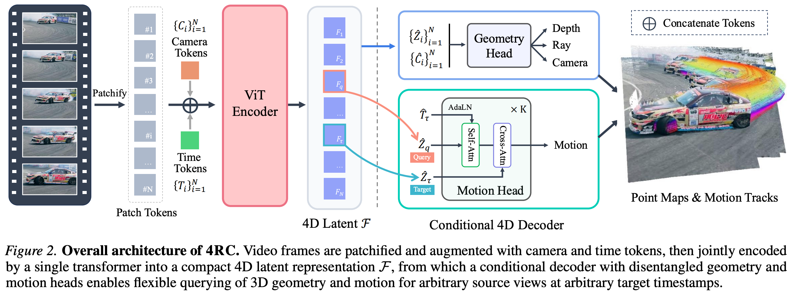

2 2026 NTU 4RC
- 4RC: 4D Reconstruction via Conditional Querying Anytime and Anywhere
- https://github.com/Luo-Yihang/4RC
Abstract
- We present 4RC, a unified feed-forward framework for 4D reconstruction from monocular videos.
- Unlike existing methods that typically decouple motion from geometry or produce limited 4D attributes, such as sparse trajectories or two-view scene flow, 4RC learns a holistic 4D representation that jointly captures dense scene geometry and motion dynamics.
- At its core, 4RC introduces a novel encode-once, query-any-where and anytime paradigm: a transformer backbone encodes the entire video into a compact spatial-temporal latent space, from which a conditional decoder can efficiently query 3D geometry and motion for any query frame at any target timestamp.
- To facilitate learning, we represent per-view 4D attributes in a minimally factorized form, decomposing them into base geometry and time-dependent relative motion.
- Extensive experiments demonstrate that 4RC outperforms prior and concurrent methods across a wide range of 4D reconstruction tasks.
1. Introduction
-
3D reconstruction has seen remarkable progress over the past decades.
- Classical geometric pipelines such as Structure-from-Motion (SfM, 2016) and Multi-View Stereo (MVS, 2019) established a solid foundation.
- More recently, learning-based approaches, exemplified by DUSt3R-like point-map predictor have enabled direct feed-forward inference of dense 3D geometry, advancing general-purpose 3D perception in terms of efficiency, scalability, and generalization.
-
Despite this progress, existing approaches largely focus on static geometry, while real-world scenes are inherently dynamic.
- A truly general visual perception system must therefore reason not only about 3D structure, but also about how the scene evolves over time.
- This motivates the task of 4D reconstruction, which aims to jointly model 3D geometry and motion.
- Such a representation is fundamental for applications ranging from video synthesis and scene understanding to robotics, where reasoning about object trajectories, deformations, and interactions is essential.
-
Existing approaches to 4D reconstruction, however, remain fragmented and limited in flexibility.
- A common strategy decomposes the problem into sequential subtasks, typically separating motion estimation from 3D reconstruction.
- For example,
SpatialTracker(2025) performs reconstruction and tracking in a staged manner, relying on iterative refinement, and producing only sparse 3D trajectories. MonST3R(2025) further requires post-hoc optimization to establish correspondences across time.- Although recent feed-forward methods such as
ST4RTrack(2025) andDynamic Point Map(2025) pioneer direct 4D prediction, they are restricted to pairwise views and thus struggle to model long-term and complex motion. - Concurrently,
TraceAnything(2025) represents motion using Bezier curves, enabling long-range 3D trajectory tracking, but often at a cost of reduced geometry quality. Any4D(2025) supports feed-forward 3D reconstruction, but only predicts scene flow for the first frame and is unable to model 3D motion for the remaining frames.V-DPM(2026) extendsVGGTto 4D, but suffers from slow inference and limited flexibility at inference.
-
Motivated by these limitations, we investigate whether a unified, feed-forward model can enable complete and flexible 4D prediction.
- In this work, we propose
4RC, a unified feed-forward approach for 4D reconstruction from monocular videos. - Unlike previous approaches that require multiple stages, 4RC learns a holistic and compact 4D representation that jointly encodes scene geometry and motion across the entire video sequence.
- This representation serves as a centralized 4D latent from which geometry and motion can be efficiently queried and decoded.
- Instead of directly reconstructing a full 3D point cloud for each frame at each timestamp, we adopt a compact factorized output formulation.
- Specifically, we represent each frame with a view-point-invariant base geometry together with time-dependent relative motion, parameterized as 3D displacements.
- By querying the model at different timestamps, 4RC can recover both geometry and motion information, such as point trajectories between any frame and any target time.
- This design enables both flexible and efficient 4D reconstruction.
- In this work, we propose
-
Our contributions can be summarized as follows:
- A unified feed-forward transformer framework for 4D reconstruction from monocular videos, which jointly models 3D geometry and motion within a single network, eliminating the need for auxiliary estimators or per-scene optimization.
- An encode-once, query-anywhere and anytime paradigm built upon a compact 4D latent representation. This allows our conditional decoder to flexibly retrieve dense 3D geometry and motion for arbitrary query frames at any target timestamp.
- A minimally factorized 4D representation that decomposes each frame into a viewpoint-invariant base geometry and time-dependent relative motion, enabling unified and flexible reconstruction of dynamic scenes.
-
Extensive experiments demonstrate that 4RC achieves competitive performance on standard benchmarks across a wide range of 3D and 4D reconstruction tasks, including
- camera pose estimation,
- video depth prediction,
- point cloud reconstruction,
- 3D point tracking, and
- dense motion modeling.
2. Related Work
Feed-forward 3D Reconstruction.
- Reconstructing 3D geometry from 2D images is a long-standing problem in computer vision.
- Traditional pipelines such as
SfM(2016) andMVS(2019) recover camera parameters and dense geometry through multi-stage optimization, achieving strong performance but at high computational cost. - Recent work has shifted toward feed-forward 3D reconstruction, aiming to replace these complex pipelines with a single neural network that directly predicts 3D attributes.
DUSt3R(2024) demonstrates that dense stereo reconstruction can be achieved in one forward pass, whileVGGT(2025) further unifies camera pose estimation and depth prediction across multiple views using a transformer backbone.- These methods highlight that, given sufficient data and model capacity, feed-forward architectures can effectively solve static 3D reconstruction.
- Extensions to dynamic settings, such as
MonST3R(2025),Pi3(2025),DA3(2025) and related approaches, jointly estimate camera parameters and per-frame geometry from dynamic data. - Despite operating on dynamic scenes, these methods only reconstruct geometry for each view and thus require separate pipelines to explicitly model 3D motion or temporal correspondence.
- Traditional pipelines such as
Point Tracking.
- Modeling motion over time has traditionally been studied through
optical flowandpoint trackingOptical flow methodsestimate dense pixel-wise displacements between adjacent frames.- These methods are typically limited to short temporal windows and often suffer from drift errors when applied to long video sequences.
- To address long-range correspondence, 2D point tracking methods aim to track sparse points across entire videos.
PIPs(2022) introduced a deep tracking framework for point tracking, followed byTAP-Net(2022),TAPIR(2023), andCoTracker(2023), which rely on correlation-based matching and iterative updates to propagate tracks over time.- These approaches operate purely in 2D and typically depend on carefully designed matching and update mechanisms.
- Recent 3D point tracking approaches extend this paradigm by decoupling geometry reconstruction from motion modeling.
SpatialTracker(2024), and subsequent methods combine a pre-trained depth estimator with a lifted 2D tracking pipeline (2023) to operate in 3D.- Despite enabling 3D tracking, their multi-stage pipelines remain limited in efficiency and flexibility, and they do not learn a unified spatiotemporal representation.
- In contrast, 4RC directly models dense geometry and motion jointly within a unified feed-forward framework, without decoupled stages or tracking heuristics.
4D Reconstruction.
-
The goal of 4D reconstruction is to recover a representation that captures both the 3D structure of a scene and how it evolves over time.
- Early methods typically formulate this problem as test-time optimization, which can produce high-quality results but requires costly per-scene optimization.
- Recent efforts have gradually shifted toward feed-forward formulations of 4D reconstruction.
St4RTrack(2025) predicts point maps for pairs of views, jointly encoding static geometry and dynamic motion; however, its pairwise formulation inherently limits the temporal range of the reconstruction.
-
We also acknowledge several recent concurrent works that explore feed-forward formulations for 4D reconstruction.
TraceAnything(2025) represents scenes using continuous trajectory fields parameterized byBezier curves.- Although this formulation enables smooth and long-range motion modeling, it often struggles to represent complex or high-frequency dynamics and may compromise geometric accuracy.
Any4D(2025) jointly predicts scene flow and 3D geometry from a canonical reference view, but lacks the flexibility to infer motion originating from arbitrary viewpoints.- Similarly,
V-DPM(2026) extendsVGGTto dynamic settings, but relies on an inflexible decoding scheme that aggregates information from all views, leading to high computational costs.
-
Concurrently,
D4RT(2025) introduces a unified model for 2D and 3D point tracking.- Specifically, D4RT first encodes the entire video into a global scene representation using a self-attention encoder,
- and then answers spatio-temporal per-point queries through a lightweight cross-attention decoder.
-
Likewise, our method, 4RC, employs a flexible query-based decoder that efficiently recovers complete and dense 4D attributes for any view at any timestamp,
- without expensive per-point computation.
3. Method
- Our goal is to develop a unified and feed-forward model, 4RC, that takes a monocular video as input and reconstructs the full underlying 4D attributes of the scene.
- The core of our approach lies in encoding the entire video sequence into a compact 4D representation, which can then be queried on-demand to decode the geometry and motion of any query frame at any target timestamp, as illustrated in Figure 2.

3.1. Problem Formulation
-
Given a monocular video sequence \(V = \{I_i\}_{i=1}^N\), where \(I_i \in R^{H\times W\times 3}\) denotes the RGB frame captured at timestamp \(t_i\) and \(N\) is the total number of frames, our goal is to recover the full 4D attributes of the scene, capturing both its 3D structure and temporal evolution.
-
Specifically, for any query frame \(I_i\) and an arbitrary target timestamp \(\tau \in \{t_i\}_{i=1}^N\), we define a time-indexed 3D point map:
- which represents the 3D positions of points observed in frame \(I_i\) as they appear at time \(\tau\).
- When \(\tau = t_i\), \(P_i^{t_i \to \tau}\) corresponds to the static 3D geometry of the frame.
- When \(\tau \ne t_i\), it describes the dynamic time-dependent point maps of the scene by mapping the points from the source frame to their locations at the target time.
Factorized 4D Attributes.
- Directly predicting point maps \(P_i^{t_i \to \tau}\) for all possible \((i, \tau)\) pairs is redundant and intractable (棘手).
- Once the underlying 3D geometry at the source time is known, the geometry at other times can be expressed through relative motion.
- We therefore adopt a factorized representation:
-
where \(P_i^{t_i}\) denotes the base 3D geometry at time \(t_i\), and \(\Delta P_i^{t_i \to \tau}\) represents the 3D displacement from time \(t_i\) to \(\tau\)
-
This formulation offers both conceptual and practical advantages.
- The base geometry \(P_i^{t_i}\) is reconstructed from image \(I_i\) under the perspective camera model, a property that allows us to directly leverage recent advances of effective geometry representation in monocular 3D reconstruction (Lin et al., 2025).
- Meanwhile, the displacement field \(\Delta P_i^{t_i \to \tau}\) explicitly captures temporal motion.
- This provides clear motion cues that are useful for downstream applications, while avoiding the need to re-predict complex geometry at every time step.
- As a result, the representation remains temporally consistent, especially in static regions and under rigid motion.
- Unless otherwise stated, all point maps are viewpoint-invariant and expressed in a world coordinate system defined by the camera of the first frame
Relation with Other Work.
-
The key distinction between 4RC and several prior or concurrent approaches lies in the flexibility and completeness of our 4D output.
- Recent feed-forward 3D reconstruction methods focus solely on predicting the base 3D geometry for each input frame, i.e., \(P_i^{t_i}\), and thus fail to capture the motion within the scene.
- Traditional 3D point tracking methods, on the other hand, estimate sparse trajectories initialized from selected points and therefore cannot recover dense 4D geometry.
- Concurrent feed-forward 4D reconstruction methods also exhibit limitations in motion modeling.
St4RTrackis restricted to pairwise motion.TraceAnythingmodels trajectory fields using Bezier curves, which limits its ability to capture accurate geometry and complex motion.Any4Dpredicts motion only relative to the first frame, i.e., \(P_1^{t_1 \to \tau}\) with \(\tau \in \{t_i\}_{i=1}^N\), and therefore cannot support motion queries from other source frames.V-DPMregresses the point map \(P_i^{t_i \to \tau}\) for all source frames \(i \in \{1, ..., N\}\) at a given target timestamp \(\tau\), by attending to all frames jointly, which incurs substantial computational overhead and limits inference flexibility.
-
In contrast,
4RCenables flexibly querying dense 3D motion from any single source frame to any target timestamp within a unified and fully feed-forward framework.
3.2. 4D Representation Encoder
- The encoder \(E\) processes the input video \(V\) to produce a unified 4D representation:
-
We adopt a plain ViT-based transformer architecture that alternates between frame-wise self-attention and global self-attention.
-
Similar to the camera token in
VGGT, which primarily encodes camera geometry information for subsequent decoding, we further append each view’s patchified tokens with a dedicated time token \(T_i\).- This time token aggregates temporal information for that view and serves as a conditioning signal for target-time motion decoding, as described in Section 3.3.
- The encoder produces a unified spatio-temporal latent representation \(F = \{F_i\}_{i=1}^N\)
- Each \(F_i = \{\hat{Z}_{i,j}\}_{j=1}^M \cup \{\hat{C}_i\} \cup \{\hat{T}_i\}\) consists of \(M\) patch tokens \(\hat{Z}_{i,j} \in R^D\) corresponding to the \(i\)-th frame, together with an encoded camera token \(\hat{C}_i\) and a time token \(\hat{T}_i\).
- We treat \(F\) as an ordered sequence of frame-level token sets.
3.3. Conditional 4D Decoder
Geometry Head.
- To recover the base geometry for each input frame, we use a geometry decoder \(D_g\).
- Given the encoded spatial tokens \(\hat{Z}_i\) and camera tokens \(\hat{C}_i\), the geometry decoder predicts per-frame depth and rays, together with camera parameters:
-
The base point map \(P_i^{t_i}\) is then obtained from \((\hat{D}_i, \hat{R}_i, \hat{\theta}_i)\) under the perspective camera model.
-
The geometry decoder \(D_g\) follows a
dual-DPTdesign with a lightweight camera head
Motion Head.
- To recover motion for any query frame \(I_q\) at a target timestamp \(\tau\), we use a lightweight transformer based motion decoder \(D_m\) with \(K\) layers of alternating self-attention and cross-attention.
- We initialize the query tokens \(\hat{Z}_q\) from the encoder output \(F\).
- The decoder outputs a dense 3D displacement field:
- Specifically, to condition on the target time, we inject time embedding \(\hat{T}_\tau\) via Adaptive Layer Normalization (AdaLN) in the self-attention blocks, and then apply cross-attention to the target spatial token set \(\hat{Z}_\tau\)
-
This design supports dense motion estimation and point tracking while remaining compatible with our per-frame geometry decoding.
-
Study note: Adaptive Layer Normalization (AdaLN)
\[ \text{AdaLN}(x, c) = \gamma(c) \odot {x - \mu \over \sigma} + \beta(c) \\[5pt] c: \text{ context} \]
3.4. Training Scheme
- We train 4RC in an end-to-end manner with joint supervision over geometry and motion attributes.
- Following prior works, we normalize the ground-truth scene scale such that the average Euclidean distance of all valid 3D points to the origin is \(1\).
- The overall training objective is defined as:
-
For all loss terms except the camera parameter loss \(L_\text{cam}\), we adopt an aleatoric (偶然性) uncertainty formulation.
- We denote the loss function as \(l(\hat{y}, y, \Sigma)\), where \(\Sigma\) represents the predicted pixel-wise uncertainty map, which adaptively down-weights unreliable regions during training.
-
To better supervise both geometry and motion, we apply gradient-based constraints in the spatial and temporal domains separately.
- For geometry learning, we enforce spatial smoothness on the predicted depth maps \(\hat{D} = \{\hat{D}_i\}\) by applying image-space gradients \(\nabla_x\).
- The depth loss is formulated as:
- Similarly, the motion loss supervises the displacement field \(\Delta P\), but we incorporate an additional temporal gradient term \(\nabla_t\) that constrains the first-order temporal derivative of the displacement (i.e., velocity) to encourage temporally consistent motion behavior:
4. Experiments
4.1. Training Setup
4.2. 4D Reconstruction
4.3. 3D Reconstruction
4.4. Ablation Studies
5. Conclusion
- We present 4RC, a unified feed-forward transformer framework for 4D reconstruction from monocular videos.
- Central to our approach is a novel encode-once, query-anywhere and anytime paradigm, in which a compact 4D representation of the entire video is learned once and subsequently queried to recover geometry and motion at arbitrary time instances.
- This paradigm effectively bridges the global spatio-temporal modeling with flexible, on-demand query-based reconstruction, achieving both accurate 4D reconstruction and high efficiency.
- Extensive experiments demonstrate that 4RC consistently outperforms prior methods across a wide range of challenging 4D reconstruction benchmarks.
- Looking ahead, unified models such as 4RC, which jointly reason about geometry and motion, represent a promising direction toward more general-purpose perceptual systems.